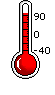
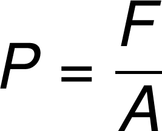
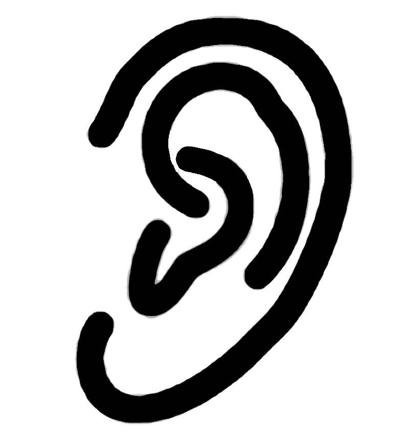
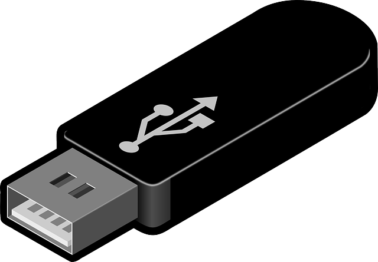
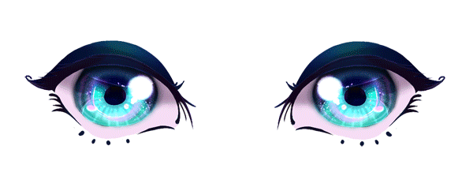

Back to Homepage
Back to Homepage

Frontal Lobe
Involved in judgement and decision making, speaking, and muscle movement. The prefrontal cortex (the front half) is not fully developed until 25 years old.
Parietal Lobe
Recieves sensory info for touch, pressure, external temperature; processes basic body sensations.
 Temporal Lobe
Involved in balance, memory, and processing auditory information,.
 Occipital Lobe
Recieves information from visual fields. Optics!
